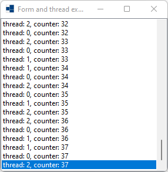
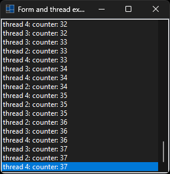
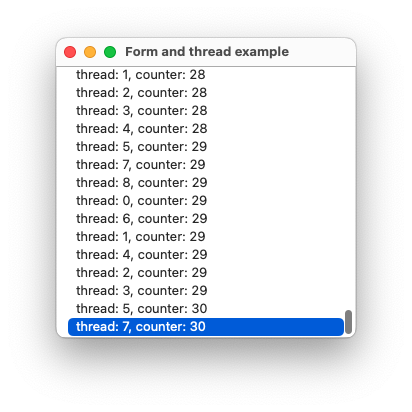
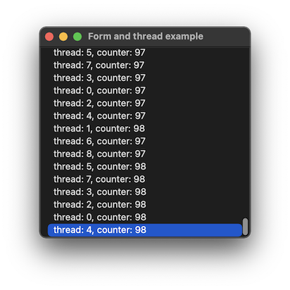
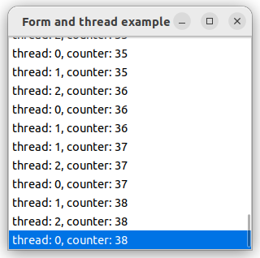
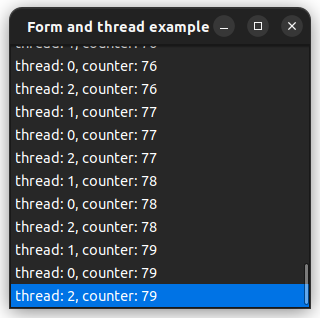

|
xtd
0.2.0
|
form_and_thread.cpp
demonstrates how a thread can update ui with xtd::forms::control::invoke method.
- Windows
- 

- macOS
- 

- Gnome
- 

#include <xtd/forms/application>
#include <xtd/forms/form>
#include <xtd/forms/list_box>
#include <xtd/threading/thread>
using namespace xtd;
using namespace xtd::forms;
using namespace xtd::threading;
public:
form_thread() {
text("Form and thread example");
form_closed += [&] {
closed = true;
thread::join_all();
};
messages.parent(*this);
messages.dock(dock_style::fill);
thread::start_new([&] {
auto counter = 0u;
thread::current_thread().name(thread_name);
while (!closed) {
thread::sleep(50_ms);
++counter;
messages.begin_invoke([&, counter, thread_name] {
messages.items().push_back(ustring::format("{}: counter: {}", thread_name, counter));
messages.selected_index(messages.items().size() - 1);
});
}
});
}
}
private:
list_box messages;
bool closed = false;
};
auto main()->int {
application::run(form_thread());
}
static uint32 processor_count()
Gets the number of processors on the current machine.
static void run()
Begins running a standard application message loop on the current thread, without a form.
static ustring format(const ustring &fmt, args_t &&... args)
Writes the text representation of the specified arguments list, to string using the specified format ...
Definition: ustring.h:744
xtd::forms::style_sheets::control form
The form data allows you to specify the box of a form control.
Definition: form.h:21
@ text
The xtd::forms::status_bar_panel displays text in the standard font.
@ fill
All the control's edges are docked to the all edges of its containing control and sized appropriately...
The xtd::forms namespace contains classes for creating Windows-based applications that take full adva...
Definition: about_box.h:13
The xtd::threading namespace provides classes and interfaces that enable multithreaded programming....
Definition: abandoned_mutex_exception.h:10
The xtd namespace contains all fundamental classes to access Hardware, Os, System,...
Definition: system_report.h:17
Generated on Sun Oct 1 2023 07:46:01 for xtd by Gammasoft. All rights reserved.